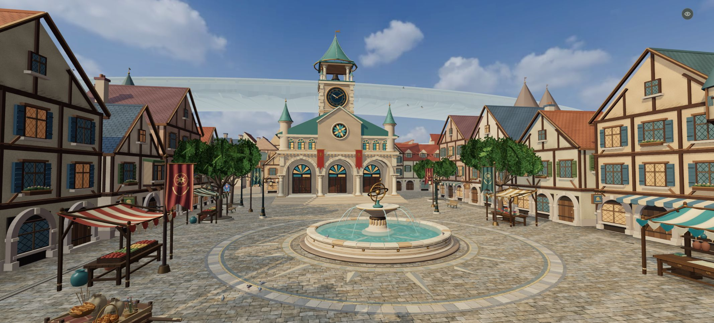
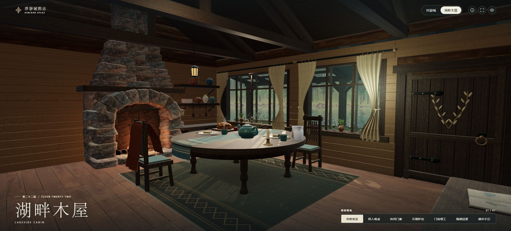
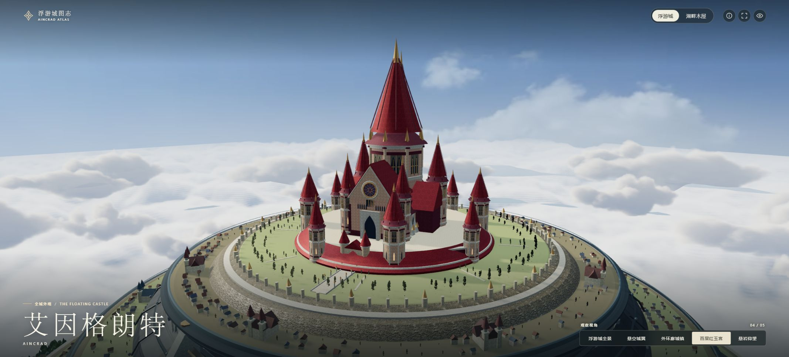
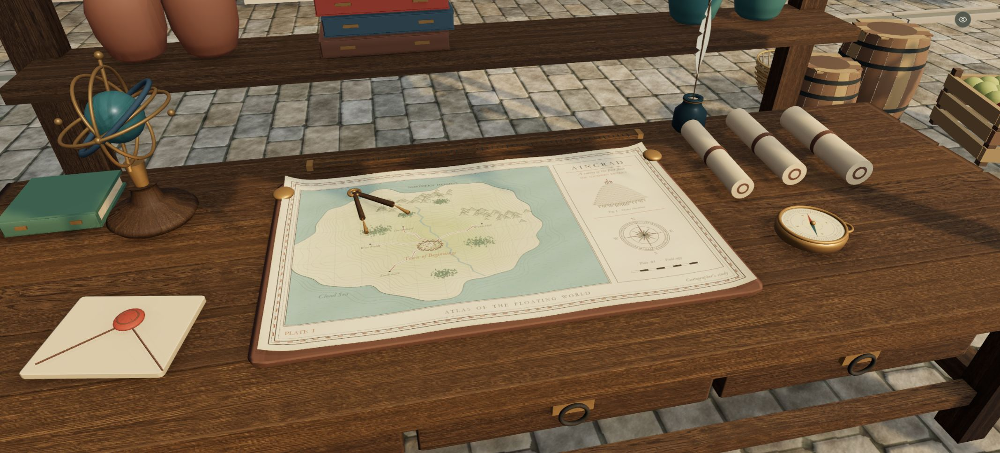

刀剑神域 · 开放世界共建计划
从云海中的百层浮城，到木屋门扉的一道刻纹。和来自世界各地的创作者与 AI，一起搭建可亲自探索的艾因格朗特。

钟楼俯瞰石铺广场，制图摊和玻璃工坊分布在集市与北廊。

穿过针叶林前的门廊，沿湖窗的晨光读一页手记。

绕行百层岩铁构造，沿着悬空城翼一直望到红玉宫。
近期提交与待认领任务请通过上方 GitHub 链接查看。 / Follow the GitHub links above for project activity.

选一个场景，写下你的发现。图志会附上当前的三维画面、机位和版本，生成一条公开任务，供项目里的 agent 接手。